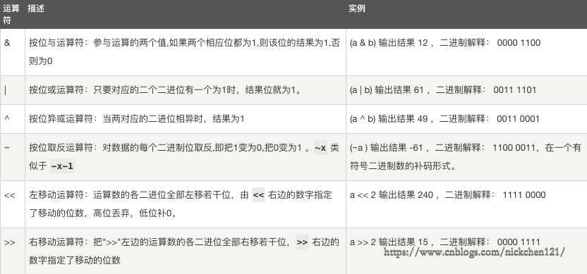

| 运算符 | 描述 | 实例 |
|---|---|---|
| + | 加 | a + b |
| - | 减 | a - b |
| * | 乘 | a * b |
| / | 除 | a / b |
| % | 取余 | a % b |
| // | 整除 | a // b |
| ** | 幂运算 | a ** b 2**3=8 |
假设变量a = 10, b = 20
| 运算符 | 描述 | 实例 |
|---|---|---|
| == | 等于，比较对象是否相等 | a == b 返回False |
| != | 不等于，比较对象是否不相等 | a != b 返回True |
| < | 小于 | a < b 返回True |
| <= | 小于等于 | a <= b 返回True |
| > | 大于 | a > b 返回False |
| >= | 大于等于 | a >= 返回False |
= += -= /= *= %= //= **=
| 运算符 | 实例 | |
|---|---|---|
| and | and 左右两个条件都为True，则为True，否则为False | |
| or | or 左右两个条件只要有一个满足则为True，否则为False | |
| not | not 否，如果条件为True，则为False，如果条件为False，则为True |
name = 'cwz'
height = 180
weight = 140
print(name == 'cwz' and height == 180) # True
print(name == 'cwz2' and weight == 140) # False
print(name == 'cwz2' or weight == 140) # True
print(name == 'cwz2' or weight == 120) # False
print(not name == 'cwz') # False| 运算符 | 描述 | 实例 |
|---|---|---|
| is | is判断两个标识符是不是引用自一个对象 | x is y, 如果引用自同一对象，返回True，否则返回False |
| is not | is not 判断两个标识符是不是引用自不同对象 | x is not y, 如果引用来自不同对象，返回True，否则返回False |
is和==的区别：is用于判断两个变量引用对象是否为同一个(是否在同一块内存空间中)， ==用于判断引用变量的值是否相等。
| 运算符 | 描述 | 实例 |
|---|---|---|
| in | 如果在指定序列中找到值，返回True，否则False | x = 1, y = [1,2,3,4], x in y ->返回True |
| not in | 如果在指定序列中没找到值，返回True，否则False | x = 1, y = [1,2,3,4], x not in y ->返回False |
按位运算符把数字看作二进制来进行来进行计算。
下表中变量 a 为 60，b 为 13，二进制格式如下：
a = 0011 1100
b = 0000 1101
-----------------
a&b = 0000 1100
a|b = 0011 1101
a^b = 0011 0001
~a = 1100 0011
优先级高的用括号括起来就行了。。。
流程控制 就是 控制 变量变化的一个方向
if 条件: # 条件成立执行下面的代码
代码if 条件1: # 条件1成立执行代码1，不成立执行代码2
代码1
else:
代码2if 条件1:
代码1
elif 条件2: # if后面条件成立，执行代码1，不会走下一步。只有if后面条件不成立才会走到这一步，才会执行代码2
代码2
elif 条件3:
代码3
elif 条件4:
代码4
......
(elif 可以有很多)
else:
代码 练习：
'''
如果 成绩>=90，打印"优秀"
如果 成绩>=80 并且 成绩<90，打印"良好"
如果 成绩>=70 并且 成绩<80，打印"普通"
其他情况：打印"差"
'''
grade = input('请输入你的成绩：')
grade_int = int(grade)
if grade_int>=90:
print('优秀')
elif grade_int >=80:
print('良好')
elif grade_int >=70:
print('普通')
else:
print('差')找bug的绝招，打印变量，查看变量的变化过程 --》 debug的来源
循环 --> 有规律的重复干一件事
while 条件: # 条件成立运行代码，不成立结束while循环
代码 # 代码执行结束后会进入下一次循环while True:
print(1)这个程序会无限打印输出1， 我们需要停下来怎么办？
打印1-100：
count = 0
while True:
if count == 100:
break # break终止循环
count += 1
print(count)打印1-100，不打印50
count = 0
while True:
if count == 100:
break
count += 1
if count == 50:
continue # continue 跳出本次循环，不执行下面的代码
print(count)打印1-100的偶数之和（不包括[22,46,68,98]）
count = 0
sum_count = 0
while 1:
if count == 100:
break
count += 2
if count in [22,46,68,98]:
continue
sum_count += count
print(count)
print('和为：', sum_count )tag中间变量 控制while循环
改进代码：
count = 0
sum_count = 0
while count < 100:
count += 2
if count in [22,46,68,98]:
continue
sum_count += count
print(count)
print('和为：', sum_count )练习：
# 猜年龄游戏，三次机会
age = 19
count = 0
while count < 3:
age_inp = input('请输入你的年龄：').strip()
age_inp_int = int(age_inp)
if age_inp_int == age:
print('猜对了')
break
elif age_inp_int < age:
print('猜小了')
else:
print('猜小了')
count += 1
print(f'你还有{3 - count}次机会')count = 0
while count < 5:
count += 1
print(count)
else:
print('没有被break打断我就能出来')
# 打印结果：
1
2
3
4
5
没有被break打断我就能出来while... else... 循环过程没有被break中断就会执行else后面的代码，否则不会执行else后面的代码。